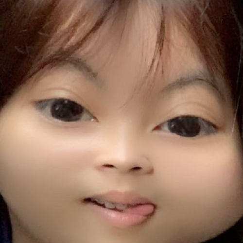

Truong Nam Phong
Hi there, I'm Truong Nam Phong! I love playing Sports and video games have always been a huge part of my life, but I'm also always on the lookout for new and exciting activities to try out. As a team player, I firmly believe that collaboration and communication are the keys to success in any endeavor. That's why I always strive to bring my competitive spirit and strategic mindset to everything I do, whether it's on the playing field or in the digital realm. I truly believe that with hard work and dedication, anything is possible, and I'm excited to continue chasing my dreams and discovering my potential.
Learn more

Nguyegn Khanh Hung
Hi there, I'm Travis, also known as Travis Tèo! I'm an amazing basketball and football player, From a young age, I've been drawn to the thrill of competition and the rush of adrenaline that comes with pushing myself to my limits. I've spent countless hours practicing my skills and honing my craft, always striving to become the best athlete I can be. Whether I'm shooting hoops with friends or running drills with my team, I take immense pride in my abilities on the court and the field. But for me, it's not just about winning - it's about the camaraderie, the teamwork, and the shared love of the game that makes sports so special. I'm grateful for every opportunity I have to play and compete, and I'm excited to see where my passion for athletics will take me in the future.
Learn more

Ngo Nhu Quynh
Hi there, my name is Quynh! I'm proud to say that I have a talent for making money - I always find ways to hustle and work hard to reach my financial goals. But that's not all there is to me! I'm also a huge music enthusiast, and I can't go a day without listening to my favorite songs. Aside from my knack for making money, music is another huge passion of mine. I can honestly say that I'm a music junkie! Whether I'm at home, on the go, or even at work (don't tell my boss!), I always have my earbuds in and my favorite tunes playing. Music has a way of making everything better, and it helps me stay motivated and focused throughout the day.
When I'm not busy making money or listening to music, I also love spending time with my furry best friend, Ken. He's my constant companion, and I cherish every moment we get to spend together. Whether we're cuddling up on the couch or going for a long walk in the park, he always puts a smile on my face and reminds me to appreciate the simple things in life.
All in all, I'm a driven and passionate person who loves to make the most out of every day. Whether it's through my work, my love of music, or my time spent with my furry friend, I always strive to live life to the fullest.
Learn more